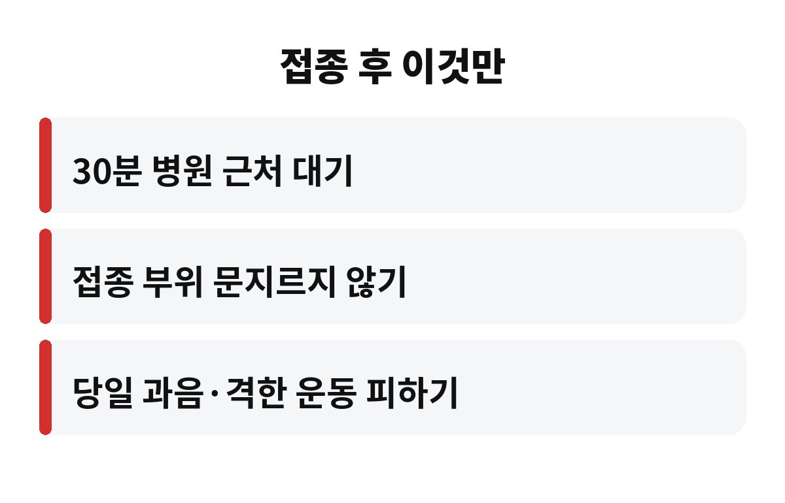
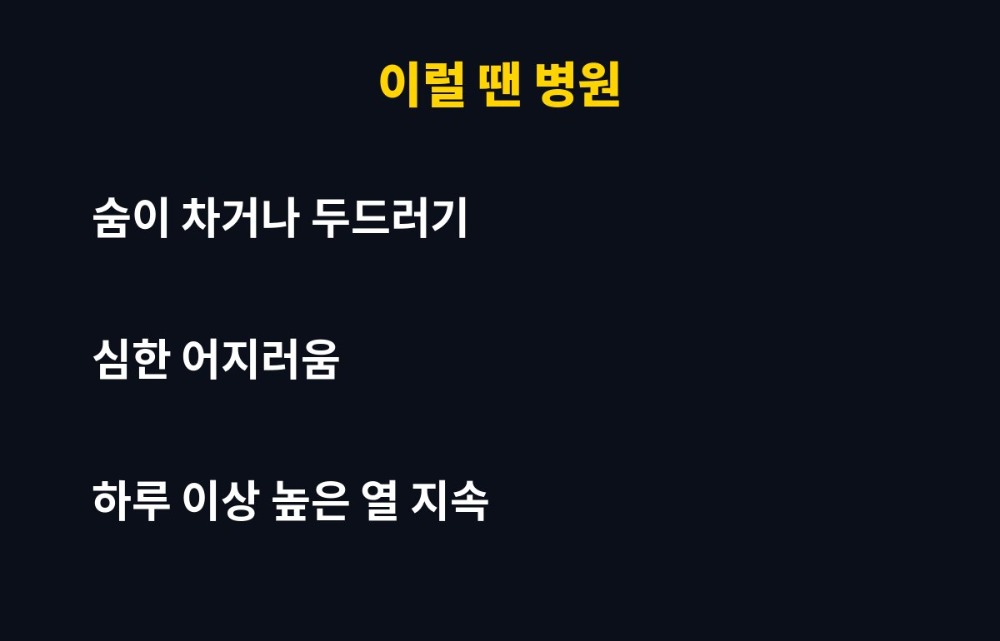

독감 접종 후 30분은 병원이나 보건소 근처에서 쉬며 몸 상태를 지켜보는 것이 기본입니다. 쌀쌀해진 10월에 부모님이 독감 접종을 받으셨다면, 맞고 나서 무심코 하는 어떤 행동이 문제가 되는지 궁금하시죠?
예방접종을 맞고 나서 가장 먼저 챙겨야 할 건 대기 시간이에요. 드물게 접종 직후 알레르기 반응이 나타날 수 있는데, 대부분 이른 시간 안에 생기거든요. 그래서 의료기관에서도 접종 후 잠시 앉아 계시라고 안내합니다.
바쁜 직장인은 맞자마자 회사로 뛰어가기 쉽죠. 하지만 독감 접종 후 30분 정도는 가까운 곳에서 쉬는 게 안전해요. 만약 숨이 차거나 온몸이 가렵고 어지러우면 바로 의료진에게 말씀하셔야 합니다. 집에 돌아간 뒤에 생기면 대처가 늦어질 수 있어요.
팔이 뻐근하면 자꾸 주무르고 싶어지는데, 접종 부위를 세게 문지르거나 마사지하는 건 피하는 게 좋습니다. 주사 맞은 자리는 이미 작은 자극을 받은 상태라서, 더 비비면 통증이나 부기가 심해질 수 있어요.
대신 팔을 가볍게 움직여 주고, 너무 아프면 차가운 수건을 살짝 대 보세요. 샤워는 보통 문제없다고 알려져 있습니다. 다만 접종 부위를 박박 닦지만 않으면 됩니다. 이 부분을 몰라서 하루 종일 샤워를 참는 분이 의외로 많아요.
접종 당일은 몸이 면역을 만드느라 평소보다 바쁜 날입니다. 그래서 과음이나 밤샘, 격한 운동은 쉬어 주는 편이 좋아요. 술을 마시면 몸이 피곤해지고, 접종 후 나타나는 미열이나 근육통과 구분이 어려워지기도 하거든요.
가벼운 산책이나 평소 하던 일상 활동은 괜찮습니다. 물을 충분히 마시고 일찍 잠자리에 드는 것만으로도 컨디션 관리에 도움이 돼요. 특히 부모님 세대는 접종 날 무리하지 않도록 옆에서 한마디 챙겨 드리면 좋겠죠.
접종 후 접종 부위가 붓고 아프거나, 미열과 두통, 몸살 기운이 며칠 이어지는 경우는 비교적 흔하다고 알려져 있어요. 대부분 시간이 지나면 가라앉습니다. 이런 증상은 몸이 면역 반응을 만들고 있다는 신호로 보시면 돼요.
다만 숨쉬기가 힘들거나, 얼굴·입술이 붓거나, 온몸에 두드러기가 번지거나, 심하게 어지러운 경우는 기다리지 말고 곧바로 응급실이나 의료기관을 찾으셔야 합니다. 열이 하루 이상 높게 계속되는 것도 확인이 필요해요.
접종 전날은 푹 자고, 당일에는 아침을 거르지 않는 게 좋아요. 공복이면 접종 후 어지러움을 더 크게 느낄 수 있거든요. 몸 상태가 평소와 다르게 안 좋거나 열이 있다면 접종 날짜를 미루는 것도 방법입니다. 과거에 접종 후 심한 반응을 겪은 적이 있다면 문진 때 꼭 말씀해 주세요.
또 접종 후에는 어느 쪽 팔에 맞았는지 기억해 두고, 그날은 무거운 짐을 들거나 팔을 많이 쓰는 일을 줄이면 한결 편합니다. 평소 복용하는 약이나 앓고 있는 질환이 있다면 접종 전에 의료진에게 미리 알려 주는 습관도 도움이 돼요. 이런 작은 준비가 접종 후 불안을 크게 덜어 줍니다. 특히 어르신은 혼자 가시기보다 가족이 동행하면 대기 시간 동안 상태를 함께 지켜볼 수 있어 훨씬 든든해요.
마지막으로, 접종 후 며칠 동안은 증상이 어떻게 변하는지 간단히 메모해 두면 병원에 갔을 때 설명하기가 훨씬 쉬워요. 언제 열이 났는지, 어디가 아픈지만 적어 두셔도 충분합니다.
하나, 접종 후 30분은 근처에서 쉬며 지켜보기. 둘, 접종 부위는 문지르지 말고 가볍게 움직이기. 셋, 당일 과음과 격한 운동은 쉬어 주기. 이 세 가지만 지켜도 접종 후 불안은 훨씬 줄어듭니다.
혹시 아직 독감 접종 전이라면, 만성질환이 있거나 접종 후 이상 반응을 겪은 적이 있는 분은 미리 의료진과 상담해 보세요. 부모님께는 이 글을 공유해 드려도 좋겠습니다. 여러분은 접종 후 어떻게 지내셨나요? 댓글로 경험을 나눠 주세요.
도움이 되셨다면 구독과 공감 부탁드려요. 다음에도 생활에 바로 쓰는 건강 정보로 찾아올게요.


※ 일반적인 건강 정보이며 개인 상태에 따라 다를 수 있으니, 증상이 있으면 반드시 전문의 상담을 받으세요.